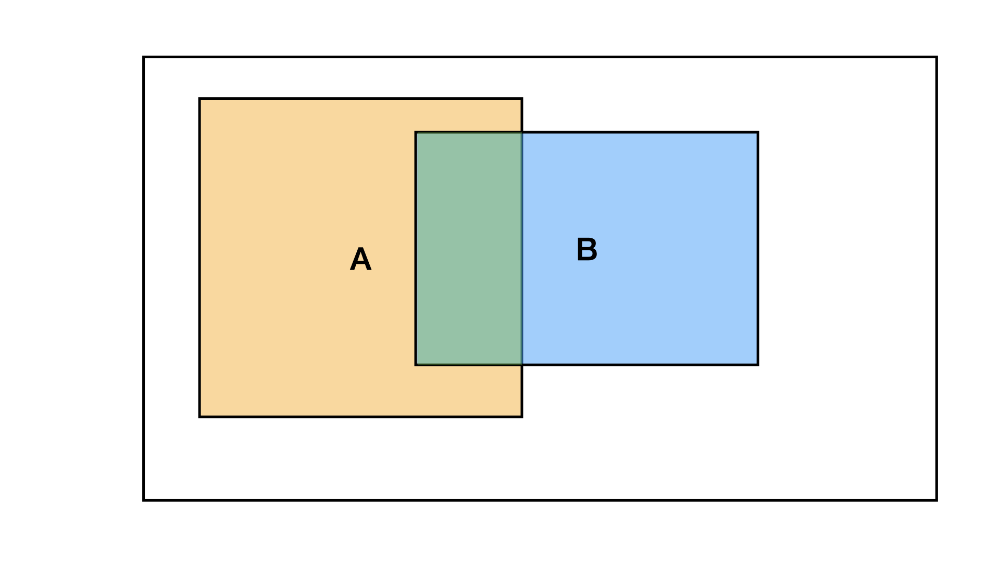
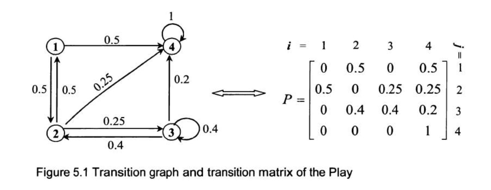
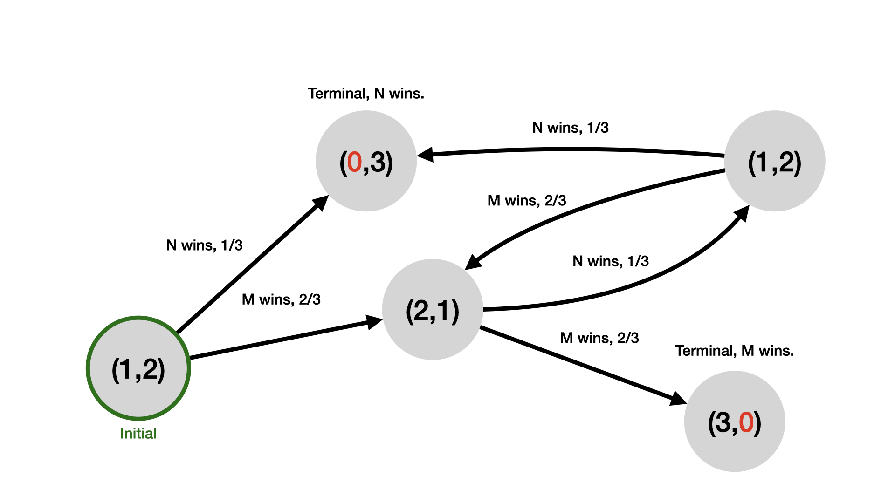

We can model probabilistic events based on outcomes, which are the outcome of an experiment or a trial (e.g., getting a “3” on the roll of a die), and a sample space, which is a set of possible outcomes, and events, which are a subset of the sample space.
A random variable is then, formally, simply a mapping from outcomes in the sample space to the set of real numbers. For example consider a 6-sided die with sides \(\{1,2,3,4,5,6\}\). Some possible outcomes are \(1\), \(3\), or \(5\), and the sample space is \(\{1,2,3,4,5,6\}\). The probability of each outcome for a fair die, deteremined by some random variable, is \(1/6\). We can define an event \(A\) representing the case that the roll is odd i.e., \(A=\{1,3,5\}\).
The expected value of a random variable \(X\) can be thought of as the “average” or “mean” value attained by that random variable. Formally, expected value is defined as \[\begin{aligned} E[X] = \sum_{x} x * P(X=x)\end{aligned}\] for every outcome \(x\) in the sample space of \(X\). For example, for a fair, 6-sided die, the expected value is \[\begin{aligned} \frac{1}{6}*1 + \frac{1}{6}*2 + \frac{1}{6}*3 + \frac{1}{6}*4 + \frac{1}{6}*5 + \frac{1}{6}*6 = 3.5\end{aligned}\] Or if we have, say, a 4-sided die where each roll has some “payoff”, e.g.
1 \(\mapsto\) 1
2 \(\mapsto\) 2
3 \(\mapsto\) 3
4 \(\mapsto\) 10
our expected payoff from rolling this die is \[\begin{aligned} \frac{1}{4}*1 + \frac{1}{4}*2 + \frac{1}{4}*3 + \frac{1}{4}*10 = 4\end{aligned}\]
Assume there are two gamblers playing a coin toss game. Gambler \(A\) has \((n+1)\) fair coins, and \(B\) has \(n\) fair coins. What is the probability that \(A\) will have more heads than \(B\) if both flip all of their coins?
We cna look at this problem symmetrically if we imagine a slightly simplified scenario where \(A\) and \(B\) both have \(n\) coins. Then, we know that for the following 3 scenarios
\(A\) flips more heads than \(B\).
\(A\) flips the same number of heads as \(B\).
\(A\) flips fewer heads than \(B\).
the first and third are symmetric, and so must have equal probabilities. Then, we really only need to consider the second case, which is the case where \(A\)’s \(n+1\)-th flip would actually make a difference.
A casino offers a card game from a deck of 52 cards with 4 cards each for \(2,3,4,5,6,7,8,9,10,J,Q,K,A\). You pick up a card from the deck and the dealer picks another one with replacement. What is the probability that you picked a larger card than the dealer’s?
Well, one way to analyze this is by considering all possible choices of two cards \(C_1\) and \(C_2\). The probability of pciking any particular suit for \(C_1\) is \(4/52 = 1/13\). We can choose to then simply analyze the probability of getting a smaller card for each possible suit case. Basically, for each suit, the probability of picking a lesser card for \(C_2\) is \(4/51 * k\), where \(k\) is 1 less than the rank of the suit. So, in general, we can compute the overall probability as \[\begin{aligned} \left(\frac{1}{13}*\frac{4}{51}*0\right) + \left(\frac{1}{13}*\frac{4}{51}*1\right) + \left(\frac{1}{13}*\frac{4}{51}*2\right) + \dots + \left(\frac{1}{13}*\frac{4}{51}*12\right) = 0.4705\end{aligned}\]
In standard probability notions, we may have some event \(A\) and want to know the probability of \(A\) occurring. If, however, we have two separate events, \(A\) and \(B\), we can also consider the probability that one event occurs given that the other occurs. This is known as conditional probability i.e., for events \(A\) and \(B\), the conditional probability of \(A\) given \(B\) is defined as \[\begin{aligned} P(A \mid B) = \dfrac{P(A \cap B)}{P(B)}\end{aligned}\] You can think of this formula visually:

That is, if we consider \(P(A | B)\), we can imagine this is like saying our sample space is now shrunk just to \(B\), and so the probability of \(A\) in this reduced space is dependent on the size of the intersection between \(A\) and \(B\) as a proportion of \(B\), as represented in the formula.
For example, if I roll a fair 6-sided die, then the probability of rolling a 4 is \(1/6\). But, if I tell you upfront that the die roll seen is \(>= 4\), then the probability that the roll is a 4 is actually now \(1/3\), since there are now only 3 possible outcomes in the reduced/conditioned sample sample (\(\{4,5,6\}\)) and our outcome 4 is one of them.
Bayes’ rule provides an alternate expression for conditional probability. For two events \(A\) and \(B\), it states: \[\begin{aligned} P(A \mid B) = \dfrac{P(B|A) * P(A)}{P(B)}\end{aligned}\] You can think of this as deriving from the basic conditional probability statement above since \(P(B \mid A)\) can be viewed as the probability of the intersection between \(A\) and \(B\) as a proportion to \(A\) as our sample space, and then we scale this up by factor of \(P(A)\) to explicitly get \(P(A \cap B)\) in the numerator.
A Markov chain is a sequence of random variables \(X_0,X_1,\dots,X_n,\dots\) with the Markov property that, given the present state, the future states and past states are independent. In other words, once the current state is known, past history has no bearing on the future. A Markov chain with \(M\) states can be completely described by an \(M \times M\) transition matrix \(P\) and the initial probabilities \(P(X_0)\), where \(p_{ij}\) is the probability of transitioning from state \(i\) to state \(j\). The probability of a particular path of states then, is the product of the probabilities of taking each corresponding transition in that path.
A transition graph is more commonly used to graphically represent the transition matrix i.e.

Note that a state \(i\) is called absorbing if it is impossible to leave this state.
As an example, consider the gambler’s ruin problem. Say player \(M\) has $1 and play N has $2. Each game gives the winner of that game $1 from the other. As a better player, \(M\) wins 2/3 of the games, and they play until one of them is bankrupt. What is the probability that \(M\) wins?
We can model this as a Markov chain where states are tuples of the account values of \(M\) and \(N\), with initial state of \((1,2)\). At each state, there are then two possible transitions: one where \(M\) wins and one where \(N\) wins, the former having probability \(2/3\) and the latter having probability \(1/3\). The \(M\) winning transition goes from a state \((m,n)\) to \((m+1,n-1)\), and similarly for the \(N\) winning transition. A winning (losing) state is one where one player’s account balance is \(\leq 0\). So, we want to determine the probability of reaching a state where \(M\) wins, starting from the initial state.
The Markov chain (i.e. probabilistic transition system) for this problem can be drawn as follows (where bankrupt values are shown in red):
